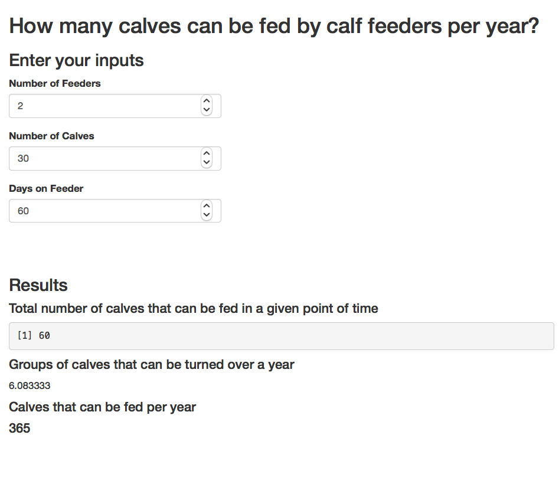

3 Translating R codes into Shiny
3.1 UI and Server
We will put the 3 inputs and 3 outputs above into an interactive Shiny app. Here, we create an User Interface (UI) object named as “my_ui” and a Server Logic object named as “my_server” and pass them into function shinyApp(). You can run this in R or Rstudio or deploy it as an online application.
UI codes
# also saved in 'minimum_example1.R'
# load shiny package
library(shiny)
my_ui <-
fluidPage(
h2("How many calves can be fed by calf feeders per year?"),
h3("Enter your inputs"),
# define inputs
# numericInput(inputId, label, value, min, max, step, width)
numericInput(inputId= "num_feeders", label="Number of Feeders", value = 2),
numericInput(inputId="num_calves", label="Number of Calves", value = 30),
numericInput(inputId="days_on_feeder", label="Days on Feeder", value = 60),
br(), br(),
# define outputs
h3("Results"),
h4("Total number of calves that can be fed in a given point of time"),
verbatimTextOutput("calves_total"),
h4("Groups of calves that can be turned over a year"),
textOutput("group_turns"),
h4("Calves that can be fed per year "),
uiOutput("calves_yr")
)Notes on UI
fluidPage(): function to define an UI for shiny app- To define inputs, we use
numericInput() - To define outputs, we use three different output types via
verbatimTextOutput(): show a R object as-istextOutput(): show a text objectuiOutput(): show a User-Interface object such as HTML code
h2(),h3(),h4()are HTML tag functions with varying header levelsbr()is a HTML tag for line change/spacing
Server Logic codes
# continued from above codes
my_server <-
function(input, output) {
# calculate and store variables as reactive objects
calves_total <- reactive({ input$num_feeders * input$num_calves })
group_turns <- reactive({ 365/input$days_on_feeder })
# render calculated results as outputs
output$calves_total <- renderPrint(calves_total())
output$group_turns <- renderText(group_turns())
output$calves_yr <- renderUI(h4(round(calves_total() * group_turns())))
}
shinyApp(my_ui, my_server)Notes on Server
- Shiny server logic is a function to define relationships between input and output objects (also this often includes a session object).
- input items are accessed by input$input_item_name
- output items are defined by output$output_item_name
- session creates a specific instance of the application for each user
reactive({}): function to create a reactive object with respect to input contents{ }brackets are used in R to bundle multiple evaluation lines (called expression)- To render outputs, we use the corresponding types of rendering functions
rendrPrint()renderText()renderUI()
Here is a screen shot. 
3.2 Reactivity
Reactivity makes an online application interactive. As the user changes inputs, the server can return updated calculation results.
- For most purposes, it suffices to think
- input as a source of trigger for reactivity
- ouput as an endpoint of the reaction
- Learn more: reactivity-overview
In the above example, if a user changes the value of input$num_feeders, this sends a signal to update all output items (visible on the webpage) that are connected to input$num_feeders. This updates calves_total, which then updates output$calves_total and output$calves_yr.
- Another common way to trigger reactivity is via
observe({...}): react to changes in any input$inpute_item in …
observeEvent(input$input_trigger, {...}): react to changes in input$input_trigger
For example, the above example can be modified, so that it only reacts when a button named “Update” is pressed.
- Notes on this modification
reactiveValues(): creates a reactive value object (list)- inside
observeEvent(), reactive updates are specified - reactive values are accessed for rendering by reactivevlaues_object$item_name
# also saved in 'minimum_example2.R'
my_server <-
function(input, output) {
# define a object (list) for reactive values
rv <- reactiveValues(calves_total = NA, group_turns =NA)
# when input$update is pressed
# calculate and store variables as reactive objects
observeEvent(input$update, {
rv$calves_total <- input$num_feeders * input$num_calves
rv$group_turns <- 365/input$days_on_feeder
})
# render calculated results as outputs
output$calves_total <- renderPrint(rv$calves_total)
output$group_turns <- renderText(rv$group_turns)
output$calves_yr <- renderUI(h4(round(rv$calves_total * rv$group_turns)))
}3.3 Inputs
- Input types included in
shinypackage, for example
numericInput()actionButton()checkboxInput()dateInput()selectInput()

3.4 Outputs
- Output types and associated rendering functions included in
shinypackage, for example

There are a variety of ways to include tables, figures, and interactive HTML objects. Here are some examples;
Interactive datatables via DT
Figures generated by ggplot2
HTML widgets
Various HTML widgets can be integrated in Shiny apps. Here is an example; 
3.5 Layout
Once you have input and output, you can arrange them in any way. Typical layout templates include the following;
Dashboard layout
3.6 Deploy as Online Application
If you use RStudio, there is a publish button at the top-right corner of the script editor. It is possible to setup a Shiny Server Open Source for free, but you have to set up and maintain the server by yourself.
The easiest way is to use Rstudio’s cloud deployment service called Shinyapps.io. It lets you deploy your application at various scales, starting at $0 for testing purposes and $9/month for small-scale applications. Learn more.
Here is Shinyapps.io’s pricing as of May 2018; 
- For serious applications, other RStudio deployment and related services include
- Rstudio Connect
- Shiny Server Pro